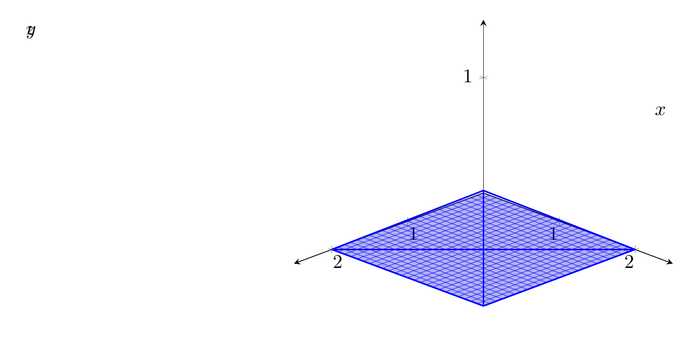

Please solve the problem in the following image.
(Image `20260928_152934_108290_utc_0800_0.png`. Alt text: Image: human_20260928_152934_108290_utc_0800)
20260928_152934_108290_utc_0800_0.png
End of problem
Answer
The problem asks to express the triple integral $\iiint_E f(x, y, z) \, dV$ in six different ways, where $E$ is the solid bounded by the surfaces:
1. $x = 2$
2. $y = 2$
3. $z = 0$
4. $x + y - 2z = 2$
### 1. Analyzing the Solid $E$
First, we identify the vertices of the solid by finding the intersections of these planes.
- **Intersection of $x=2, y=2, z=0$:** Point $V_1 = (2, 2, 0)$.
- **Intersection of $x=2, y=2, x+y-2z=2$:** $2 + 2 - 2z = 2 \implies 2z = 2 \implies z = 1$. Point $V_2 = (2, 2, 1)$.
- **Intersection of $x=2, z=0, x+y-2z=2$:** $2 + y - 0 = 2 \implies y = 0$. Point $V_3 = (2, 0, 0)$.
- **Intersection of $y=2, z=0, x+y-2z=2$:** $x + 2 - 0 = 2 \implies x = 0$. Point $V_4 = (0, 2, 0)$.
The solid $E$ is a tetrahedron with vertices $(2,2,0), (2,2,1), (2,0,0),$ and $(0,2,0)$.
The boundary surfaces can be rewritten to express one variable in terms of others:
- The top surface is $z = \frac{x + y - 2}{2}$.
- The bottom surface is $z = 0$.
- The projection of the solid onto the $xy$-plane is the triangle bounded by $x=2, y=2,$ and the line where $z=0$ in the fourth plane, which is $x + y = 2$.
The vertices of this triangular projection are $(2,2), (2,0),$ and $(0,2)$.
### 2. Visualizing the Solid
Below is a visualization of the tetrahedron.
---
\documentclass[border=10pt]{standalone}
\usepackage{pgfplots}
\usepgfplotslibrary{colormaps}
\pgfplotsset{trig format plots=rad}
\begin{document}
\begin{tikzpicture}
\begin{axis}[
view={135}{30},
xlabel=$x$, ylabel=$y$, zlabel=$z$,
xmin=0, xmax=2.5,
ymin=0, ymax=2.5,
zmin=0, zmax=1.5,
grid=major,
axis lines=center,
]
% Let's use a more robust way to draw faces using addplot3
% Face 1: x=2 (V1, V2, V3) -> (2,2,0), (2,2,1), (2,0,0)
\addplot3[surf, opacity=0.3, domain=0:2, y domain=0:2] {0}; % This is just a placeholder
% Better: Use coordinates and simple lines to define the skeleton or use patches if they work.
% Actually, let's just draw the edges to make it clear.
% Edges:
% V1-V2: (2,2,0) to (2,2,1)
% V1-V3: (2,2,0) to (2,0,0)
% V1-V4: (2,2,0) to (0,2,0)
% V2-V3: (2,2,1) to (2,0,0)
% V2-V4: (2,2,1) to (0,2,0)
% V3-V4: (2,0,0) to (0,2,0)
\addplot3[blue, thick] coordinates {(2,2,0) (2,2,1)};
\addplot3[blue, thick] coordinates {(2,2,0) (2,0,0)};
\addplot3[blue, thick] coordinates {(2,2,0) (0,2,0)};
\addplot3[blue, thick] coordinates {(2,2,1) (2,0,0)};
\addplot3[blue, thick] coordinates {(2,2,1) (0,2,0)};
\addplot3[blue, thick] coordinates {(2,0,0) (0,2,0)};
\end{axis}
\end{tikzpicture}
\end{document}

pgfplots_0.png
---
### 3. Determining the Six Iterated Integrals
To express the integral in six different ways, we change the order of integration. The six orders are $dz\,dy\,dx$, $dz\,dx\,dy$, $dy\,dz\,dx$, $dy\,dx\,dz$, $dx\,dy\,dz$, and $dx\,dz\,dy$.
#### Order 1: $dz\,dy\,dx$
The projection on the $xy$-plane is the triangle with $0 \le x \le 2$ and $2-x \le y \le 2$. For any $(x,y)$ in this region, $z$ varies from $0$ to $\frac{x+y-2}{2}$.
$$
\int_0^2 \int_{2-x}^2 \int_0^{\frac{x+y-2}{2}} f(x,y,z) \, dz \, dy \, dx
$$
#### Order 2: $dz\,dx\,dy$
Symmetrically, for the projection on the $xy$-plane, $0 \le y \le 2$ and $2-y \le x \le 2$.
$$
\int_0^2 \int_{2-y}^2 \int_0^{\frac{x+y-2}{2}} f(x,y,z) \, dz \, dx \, dy
$$
#### Order 3: $dy\,dz\,dx$
For a fixed $x \in [0, 2]$, we look at the region in the $yz$-plane. The bounds for $z$ are found by setting $y=2$ in $z = \frac{x+y-2}{2}$, giving $z = x/2$. Thus, $0 \le z \le x/2$. For fixed $x$ and $z$, $y$ goes from the plane $x+y-2z=2 \implies y = 2z + 2 - x$ to the plane $y=2$.
$$
\int_0^2 \int_0^{x/2} \int_{2z+2-x}^2 f(x,y,z) \, dy \, dz \, dx
$$
#### Order 4: $dy\,dx\,dz$
For a fixed $z \in [0, 1]$, the $xy$-region is bounded by $x=2, y=2,$ and $x+y=2+2z$. The vertices are $(2, 2z), (2, 2), (2z, 2)$. So, $2z \le x \le 2$ and $2+2z-x \le y \le 2$.
$$
\int_0^1 \int_{2z}^2 \int_{2+2z-x}^2 f(x,y,z) \, dy \, dx \, dz
$$
#### Order 5: $dx\,dy\,dz$
Similarly, for a fixed $z \in [0, 1]$, the $xy$-region is $2z \le y \le 2$ and $2+2z-y \le x \le 2$.
$$
\int_0^1 \int_{2z}^2 \int_{2+2z-y}^2 f(x,y,z) \, dx \, dy \, dz
$$
#### Order 6: $dx\,dz\,dy$
For a fixed $y \in [0, 2]$, the $z$ limits are $0 \le z \le y/2$. For fixed $y$ and $z$, $x$ goes from $2+2z-y$ to $2$.
$$
\int_0^2 \int_0^{y/2} \int_{2+2z-y}^2 f(x,y,z) \, dx \, dz \, dy
$$
### Final Answer
The six iterated integrals are:
1. $\int_0^2 \int_{2-x}^2 \int_0^{\frac{x+y-2}{2}} f(x,y,z) \, dz \, dy \, dx$
2. $\int_0^2 \int_{2-y}^2 \int_0^{\frac{x+y-2}{2}} f(x,y,z) \, dz \, dx \, dy$
3. $\int_0^2 \int_0^{x/2} \int_{2z+2-x}^2 f(x,y,z) \, dy \, dz \, dx$
4. $\int_0^1 \int_{2z}^2 \int_{2+2z-x}^2 f(x,y,z) \, dy \, dx \, dz$
5. $\int_0^1 \int_{2z}^2 \int_{2+2z-y}^2 f(x,y,z) \, dx \, dy \, dz$
6. $\int_0^2 \int_0^{y/2} \int_{2+2z-y}^2 f(x,y,z) \, dx \, dz \, dy$
$\boxed{
\begin{aligned}
&\int_0^2 \int_{2-x}^2 \int_0^{\frac{x+y-2}{2}} f(x,y,z) \, dz \, dy \, dx \\
&\int_0^2 \int_{2-y}^2 \int_0^{\frac{x+y-2}{2}} f(x,y,z) \, dz \, dx \, dy \\
&\int_0^2 \int_0^{x/2} \int_{2z+2-x}^2 f(x,y,z) \, dy \, dz \, dx \\
&\int_0^1 \int_{2z}^2 \int_{2+2z-x}^2 f(x,y,z) \, dy \, dx \, dz \\
&\int_0^1 \int_{2z}^2 \int_{2+2z-y}^2 f(x,y,z) \, dx \, dy \, dz \\
&\int_0^2 \int_0^{y/2} \int_{2+2z-y}^2 f(x,y,z) \, dx \, dz \, dy
\end{aligned}
}$